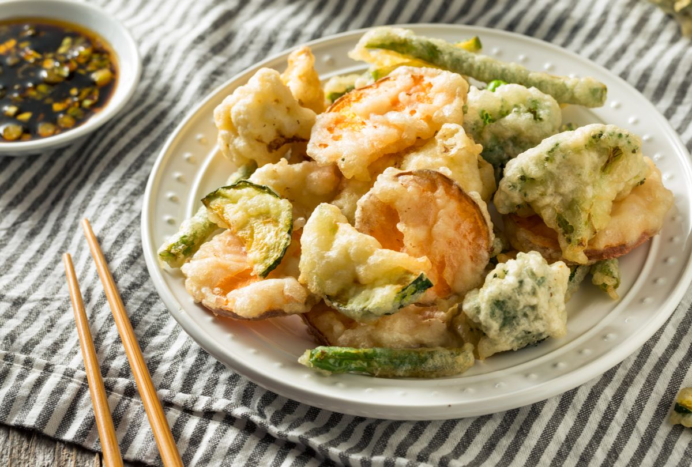
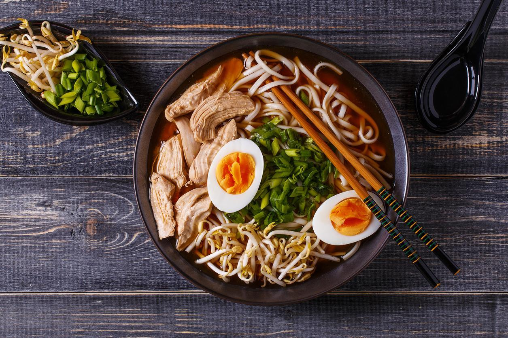

Delicie-se com nosso sushi de salmão, uma combinação perfeita de frescura e sabor. Preparamos cuidadosamente fatias de salmão de alta qualidade e as colocamos sobre arroz de sushi premium, coberto com sementes de gergelim torradas.
Cada peça é uma explosão de sabor, equilibrando a suculência do salmão com a suavidade do arroz. Servido com molho de soja, wasabi e gengibre em conserva, este prato é uma experiência gastronômica que você não pode perder. A frescura e a qualidade dos ingredientes garantem que cada mordida seja uma celebração de sabores. Venha saborear o melhor sushi de salmão da cidade!
Tempura

Desfrute da crocância e do sabor irresistível do nosso Tempura Misto, uma especialidade que combina a tradição japonesa com um toque de inovação. Este prato é um verdadeiro deleite para os amantes de frutos do mar e vegetais frescos.
Preparamos camarões suculentos, legumes coloridos e cogumelos frescos, todos cuidadosamente envolvidos em uma massa leve e crocante antes de serem fritos à perfeição.
Ramen

O macarrão de ramen é cozido até atingir a consistência perfeita, e o caldo é preparado com ingredientes cuidadosamente selecionados, resultando em um sabor profundo e reconfortante. Nossa tigela de ramen é recheada com fatias suculentas de carne (opcional), ovo cozido com gema macia, broto de bambu crocante, cebolinha fresca e algas nori.
A cada garfada, você experimentará um equilíbrio delicioso de sabores e texturas, e o aroma reconfortante do caldo quente irá envolvê-lo em uma experiência culinária autêntica. O Ramen Japonês Clássico é perfeito para uma refeição satisfatória em qualquer estação.